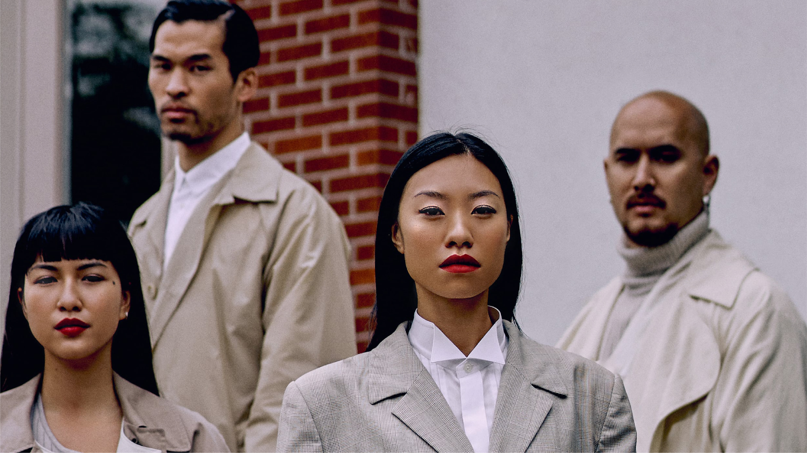

VOLUME 1 / HOME ︎

VOLUME 1
YOUR MODEL MINORITY?
YOUR MODEL MINORITY?
The writers of these articles and commentary are of North-East Asian, East Asian, and South-East Asian origin. Our team’s reflections are not generalizable to all Asians and our collective does not speak for others. We simply wish to add a layer of perspective to the current scant mainstream media representation of Asians-Canadians voices. Our experiences are our own, but they also resonate with others without being identical to anyone else’s. We will continue looking to include the ideas of people from different backgrounds and life trajectories.
Note that the object of the following commentary is “Asian-Canadians” but I chose to refer to it with the abbreviated “Asians”. I also decided to alternate between using the pronoun “I” and the pronoun “we”. Generally speaking, I encourage people to talk from their own lived experience and viewpoint. But sometimes, I find that “we” better communicates the idea that our experience is similar to that of many, like a ring in a chain mail.
We understand how the past influences the present. The impact of trauma on people’s lives perpetuates itself over generations. We will continue to educate ourselves on the ongoing effects of systemic racism and intergenerational trauma on racialized people who continue to suffer from abuse and neglect — we encourage readers to do the same. We find relevance to the matter in our current volume, in which we explore the evolution of colonial mentality.
Note that the object of the following commentary is “Asian-Canadians” but I chose to refer to it with the abbreviated “Asians”. I also decided to alternate between using the pronoun “I” and the pronoun “we”. Generally speaking, I encourage people to talk from their own lived experience and viewpoint. But sometimes, I find that “we” better communicates the idea that our experience is similar to that of many, like a ring in a chain mail.
We understand how the past influences the present. The impact of trauma on people’s lives perpetuates itself over generations. We will continue to educate ourselves on the ongoing effects of systemic racism and intergenerational trauma on racialized people who continue to suffer from abuse and neglect — we encourage readers to do the same. We find relevance to the matter in our current volume, in which we explore the evolution of colonial mentality.
EDITOR’S NOTE
June 17th 2020
Our team originally planned on launching Sticky Rice earlier this year, but as was the case for many people, our plans were put on hold amidst the coronavirus pandemic. I questioned whether the topic of our first volume remained at all relevant considering how quickly I saw mainstream views of Asians turn from “model minority” to a “new yellow peril”, a threat to the Western world, within just a few days. As I watched masked Asian faces become the media’s chosen face for the invisible COVID-19 threat, I knew what was coming. Society was going to need a scapegoat: a group of people to take the blame for the terrible losses we were about to face. And then it started happening. I started to hear stories about my Asian friends being threatened and spat on while out in public; the media started covering the stories of people who were getting assaulted and who were getting stabbed in broad daylight. The statues from Chua Quan Am, the pagoda where my grandparents' ashes are kept, were smashed to pieces—the same pagoda that lent us their sacred grounds to shoot the cover for this volume.
Most of the articles in this first edition were written over the past year, before the start of the COVID-19 pandemic. Nevertheless, they remain relevant to what is going on in the world today. Launching this project is now more important than ever. In addition to denouncing social injustice in the world, there is also a collective need to reconnect with love in times of fear. I remind myself of how it felt listening to stories about people whose life trajectories were closer to my family’s in movies like The Farewell. These were the experiences of people walking the line between two worlds, stories about change asserting itself against tradition, and vice-versa. These messy but relatable stories were being made visible to the rest of the world. And this phenomenon is powerful.
As someone with training in Western psychiatry and with a burning interest in Eastern philosophy, I felt encouraged to facilitate an emotional exploration around certain themes related to the Asian-Canadian experience, while contributing to our media visibility. Sometimes, this involves addressing common grievances related to social marginalization. For this to be achieved, we need to allow ourselves to be vulnerable and let people in on how we relate to our differences.
Asians have been left out of the conversation about race for too long. It may have been a survival reflex for some to remain subtle, but as a collective, it is now unpurposeful. We congratulate the Black Lives Matter movement that has successfully proven to the world that you too can be heard if you assert yourself clearly enough.
With that in mind, it is with great humility that my team and I present you, readers, with the first issue of our new online magazine, Sticky Rice. We must insist on our humble beginnings because we know that there are so many other stories that are still waiting to be told — stories about people from different backgrounds and life trajectories that we have not yet had the chance to showcase. But we all have to start somewhere. I’ll end this note with a Chinese proverb: “A flower you plant may not necessarily bloom, but the seed of a tree you happen to drop may grow into a forest.”
“A flower you plant may not necessarily bloom, but the seed of a tree you happen to drop may grow into a forest.”
YOUR MODEL MINORITY?
People won’t always believe me when I first tell them that Viêt is my given name. They find it absurd that I would be named after my parent’s motherland. Over the years, the “Is your last name Nam?” jokes have gradually been replaced with the more socially appropriate “Is that a common name?”. I still don’t know the answer to the latter, nor have I figured out a witty reply. What I do know is that Viêt is a shorter term designating one who is of Vietnamese descent. I know that it has a nationalistic ring to it, which makes me feel like I should have a stronger connection to my parents’ country of origin. On second thought, perhaps that feeling has more to do with how my mother was always the first person to remind me that I am Vietnamese. I remember how the sound of her voice brightened every time she pointed out another Vietnamese person on television. On the other hand, my family didn’t tell me much about their life in Vietnam. For family dinners, we often ate pasta or slow-cooked beef ragout; to the disappointment of many, we rarely ate phở at home. And by the age of five, when my mother would speak to me in Vietnamese in a desperate attempt to get me to reply in the same language, the effects of acculturation were already profound—I could only answer her in French or English, my native country’s main languages.
Fortunately, today, as a resident psychiatrist, I benefit from the privilege of higher-level education. Quebecer swear words are well integrated in my usual vocabulary. “You barely have an accent!”, they used to say. I used to practice yoga in a studio where I was often the only one who wasn’t a white person sporting trendy activewear. I would inhale and exhale as “nah-mah-stay” was mispronounced in unison at the end of every class. Considering all this, many people would say that I am a “well-integrated” person of colour. To a certain degree, I must acknowledge that I fulfill the stereotype of the model minority, a term used to describe a demographic group whose members have achieved a higher level of socioeconomic success compared to the general population.
In the United States, this designation has historically been attributed to Asian-Americans based on generalized statistical data that showed that they had the highest rate of educational attainment and average household incomes compared to other ethnic groups. Over the years, the oversimplified model minority concept has taken on a life of its own and continues to colour the experiences of Asians and other minorities who have established themselves in the Western world. Although I realize that the intention of the model minority accolade is one of praise, I am repulsed by the idea of wearing it as a badge of honour. Especially when the stereotypical perception of Asians as hard-working and intelligent people holding jobs in science and technology is linked to the idea that other minority groups are “problem minorities”. Or that Asians are one-track minded and unopinonated. At what cost does a marginalized person attain this level of social status and why would they be driven to achieve this form of social success? I can’t help but think that the blunting of my family’s culture and of my Vietnamese identity is trivialized in the pursuit of conformity.
For this first issue, my team and I decided to open up the conversation around the model minority-related stereotype here in Canada, which until now has received more attention in the United States. Rather than dispute the truth or falsity of its claims, we wanted to bring clarity to its origins and to its social impact. After all, the definition of a stereotype answers this debate on its own: it is an idea or a broad statement applied to a particular group without consideration for what makes the individuals in that group unique. Thinking in terms of stereotypes is natural for human beings. Our brains retrieve information, recognize patterns, and record them more quickly than what would allow our consciousness to appraise what is occuring. And when we translate this mode of operating into a complex and diverse society—i.e. when we start treating individuals or groups in a specific way that is based on preconceived and inaccurate ideas—our brains’ modus operandi becomes dangerous: we manage to trap certain groups into predefined narratives.
So I sat down with old and new friends to investigate how this stereotype affects them on a day-to-day basis. There were moments in our conversations during which we laughed hysterically, but most often we shared compassion for the complex task of navigating ethnic identity. I want to invite readers to peek into our personal encounters with the model minority stereotype in these articles. These pieces are firsthand, raw accounts that present the struggle, puzzlement and engagement with racialized ideas by real Asian-Canadians. Following the four articles is Sticky Rice’s editorial commentary tying together the common threads in each to create a collective whole.
In the United States, this designation has historically been attributed to Asian-Americans based on generalized statistical data that showed that they had the highest rate of educational attainment and average household incomes compared to other ethnic groups. Over the years, the oversimplified model minority concept has taken on a life of its own and continues to colour the experiences of Asians and other minorities who have established themselves in the Western world. Although I realize that the intention of the model minority accolade is one of praise, I am repulsed by the idea of wearing it as a badge of honour. Especially when the stereotypical perception of Asians as hard-working and intelligent people holding jobs in science and technology is linked to the idea that other minority groups are “problem minorities”. Or that Asians are one-track minded and unopinonated. At what cost does a marginalized person attain this level of social status and why would they be driven to achieve this form of social success? I can’t help but think that the blunting of my family’s culture and of my Vietnamese identity is trivialized in the pursuit of conformity.
For this first issue, my team and I decided to open up the conversation around the model minority-related stereotype here in Canada, which until now has received more attention in the United States. Rather than dispute the truth or falsity of its claims, we wanted to bring clarity to its origins and to its social impact. After all, the definition of a stereotype answers this debate on its own: it is an idea or a broad statement applied to a particular group without consideration for what makes the individuals in that group unique. Thinking in terms of stereotypes is natural for human beings. Our brains retrieve information, recognize patterns, and record them more quickly than what would allow our consciousness to appraise what is occuring. And when we translate this mode of operating into a complex and diverse society—i.e. when we start treating individuals or groups in a specific way that is based on preconceived and inaccurate ideas—our brains’ modus operandi becomes dangerous: we manage to trap certain groups into predefined narratives.
So I sat down with old and new friends to investigate how this stereotype affects them on a day-to-day basis. There were moments in our conversations during which we laughed hysterically, but most often we shared compassion for the complex task of navigating ethnic identity. I want to invite readers to peek into our personal encounters with the model minority stereotype in these articles. These pieces are firsthand, raw accounts that present the struggle, puzzlement and engagement with racialized ideas by real Asian-Canadians. Following the four articles is Sticky Rice’s editorial commentary tying together the common threads in each to create a collective whole.


OUR COMMENTARY
What the Sticky Rice team and I have come to realize while meeting with other Asian-Canadians who’ve supported us through the development process is that it doesn't matter what one’s life philosophy is: we all appreciate seeing our experiences reflected back to us. This isn’t always comfortable. However, engaging with this discomfort can also provide relief when given the proper space. From what we’ve gathered, the model minority concept affects the lives of people in different ways, depending on the meaning that they ascribe to it and the circumstances in which it applies. For some, being favourably stereotyped has been thought to benefit them in certain situations, such as navigating common social interactions. In her piece, Isa Jetté-Coté wrote that “living in the shadow of such a cliché was like having a good business card”, which lends support to the idea that some Asians have embraced the stereotype in order to appeal to positive perceptions. For Julie Se, the “positive” stereotype was felt to place her in a questionable position of privilege, which has led other people to negate her right to express her views around race-related issues. After listening to what they had to say, it became clear to us that there was a lot of ground to cover in addressing this topic.
In order to talk about the Western model minority concept, we must first understand the historical context surrounding the displacement of Asian peoples to the West. The West, it is often forgotten, has a long and ongoing history of imperialism and colonialism in Asia that shapes perceptions of Eastern communities to this day. Every single country in Asia, with the sole exception of Thailand, was directly colonized and exploited by Western powers in the modern era; Macau was a European colony until 1999, Hong Kong until 1997. Under oppressive colonial rule, locals maintained a sense of control and dignity while living in hardship by accumulating wealth as a security measure. This history cannot be overlooked as it is inextricably linked to the immigration of Asian peoples to the West and the various racial dynamics that have given rise to narratives like the model minority.
The model minority concept was first introduced in the United States in the 1960s. After centuries of having been depicted as unassimilated foreigners, Asian-Americans began seeing themselves represented in a more favourable light. Multiple media publications labelled Asian-Americans as “The Good Immigrants” for supposedly triumphing over other races in terms of economic, educational, and professional success, despite having to endure the struggle of immigration and of minority status. The model minority rhetoric emerged during the Civil Rights Movement when African-Americans were demanding equality and speaking out against racial disparities. It has been argued that mainstream American society needed a “successful immigrant group” to cast doubt on the validity of social justice movements perceived to be threats to the nation’s racial hierarchy, dismissing the impact of intergenerational trauma and of systemic racism on the Black community. Against this backdrop, the apparent “success story” of Asian-Americans was said to be used in order to minimize complaints about racial discrimination in the United States.8 At the same time, the stereotype pitted minority groups against each other and sent the message that those who conformed were favoured, a problematic dilemma that has eroded camaraderie and created competition between people of color under the watchful eye of white shareholders. Still today, there are people using the model minority myth to perpetuate anti-Blackness and to avoid seeing the painful consequence of racial prejudice on people of colour.
So how has this phenomenon translated itself in Canada? Looking back in history, Canada also crowned the Chinese as “model minorities” in major news outlets including the Toronto Star, Fortune Magazine, and the Montreal Gazette throughout the 1980s and 1990s.1 The Canadian Multicultural Act recognizes the importance of preserving multicultural heritage across race, national or ethnic origin, skin colour, and religion, and acknowledges this diversity as a fundamental Canadian value. As much as policies like these have also promoted everyday racial education by increasing contact between individuals of diverse ethnic backgrounds, the trend of diversity campaigns does not automatically lead to equity. It is clear that certain stereotypes exert their negative influence in Canada.
The model minority concept was first introduced in the United States in the 1960s. After centuries of having been depicted as unassimilated foreigners, Asian-Americans began seeing themselves represented in a more favourable light. Multiple media publications labelled Asian-Americans as “The Good Immigrants” for supposedly triumphing over other races in terms of economic, educational, and professional success, despite having to endure the struggle of immigration and of minority status. The model minority rhetoric emerged during the Civil Rights Movement when African-Americans were demanding equality and speaking out against racial disparities. It has been argued that mainstream American society needed a “successful immigrant group” to cast doubt on the validity of social justice movements perceived to be threats to the nation’s racial hierarchy, dismissing the impact of intergenerational trauma and of systemic racism on the Black community. Against this backdrop, the apparent “success story” of Asian-Americans was said to be used in order to minimize complaints about racial discrimination in the United States.8 At the same time, the stereotype pitted minority groups against each other and sent the message that those who conformed were favoured, a problematic dilemma that has eroded camaraderie and created competition between people of color under the watchful eye of white shareholders. Still today, there are people using the model minority myth to perpetuate anti-Blackness and to avoid seeing the painful consequence of racial prejudice on people of colour.
So how has this phenomenon translated itself in Canada? Looking back in history, Canada also crowned the Chinese as “model minorities” in major news outlets including the Toronto Star, Fortune Magazine, and the Montreal Gazette throughout the 1980s and 1990s.1 The Canadian Multicultural Act recognizes the importance of preserving multicultural heritage across race, national or ethnic origin, skin colour, and religion, and acknowledges this diversity as a fundamental Canadian value. As much as policies like these have also promoted everyday racial education by increasing contact between individuals of diverse ethnic backgrounds, the trend of diversity campaigns does not automatically lead to equity. It is clear that certain stereotypes exert their negative influence in Canada.
“They say that diversity is being invited to the party, and that inclusion means being invited to dance. I like to think that inclusion also means being allowed to host the party from time to time.”


One Homogenous Group?
Expected to succeed
Growing up, many have heard the expression “Asians all look the same”. People may recall Asian students often being mistaken for one another. Nowadays, Asians dispersed around the world are being conflated and blamed for being the harbingers of disease. There’s nothing new here. Although understandably, China has made its mark in the world by having the fastest growing economy over the past decades, people should know that not everyone is “Made in China”.
The West has yet to recognize the differences among various Asian cultures and ethnicities in the same way most can easily distinguish between French and Italian contributions to European historical heritage. The model minority discourse has lumped people coming from over 40 different ethnic groups with distinct social norms, languages, and religions together, and has turned them into a homogenous group of people who are supposed to live up to a standard that has been set by only a few high-achieving persons. Let’s remember that there were times when immigration policies cherry-picked Asian immigrants coming from wealthier or more skilled backgrounds. Their presence in Canada as affluent one-percenters helped to reify Eastern immigrants’ status as model minorities, displaying levels of economic prosperity relatively few could attain. The image of these prosperous, high-achieving Asians left a strong impression on Canadians. “Math whizzes” and “academic giants” could be read on the cover of popular magazines.1
On the other hand, it also overshadowed the struggles of Asians who came from lower socio-economic backgrounds—including those immigrating for family reunification or as refugees. With limited access to financial and other forms of capital, people from these groups haven’t had access to the same opportunities as others. What people may not know is that children of these immigrant families often have to share the family’s financial burden; they work part-time jobs to make ends meet, leaving them with less flexibility to attend to their personal goals. The model minority stereotype has rendered the lives of these different subgroups invisible in the mainstream media and does not account for their complex histories.
Nevertheless, it is not uncommon for an Asian student who obtains a grade that is above average, but not the highest in the class, to be met with mockery – an Asian fail. Although situations like these are often brushed off as humour, these everyday slights leave many Asians cultivating an unhealthy relationship with the notion of success and feedback. Julie Se expresses her fear of experiencing shame for failing to live up to what was expected from her: "Unpacking the feelings associated with the pressure that I felt to live up to this model minority image brought me to thinking about the millions of people, including myself, who grew up feeling like they were constantly falling short, or that they were not good enough."
Nevertheless, it is not uncommon for an Asian student who obtains a grade that is above average, but not the highest in the class, to be met with mockery – an Asian fail. Although situations like these are often brushed off as humour, these everyday slights leave many Asians cultivating an unhealthy relationship with the notion of success and feedback. Julie Se expresses her fear of experiencing shame for failing to live up to what was expected from her: "Unpacking the feelings associated with the pressure that I felt to live up to this model minority image brought me to thinking about the millions of people, including myself, who grew up feeling like they were constantly falling short, or that they were not good enough."
"Unpacking the feelings associated with the pressure that I felt to live up to this model minority image brought me to thinking about the millions of people, including myself, who grew up feeling like they were constantly falling short, or that they were not good enough."
The two worded expression “model minority” ends up saying more than what it was intended for. Indeed, the concept is similar to that of the model student, the teacher’s pet. A standard to look up to, but never equal to the teacher. The idealization of Asians by society as naturally gifted becomes a harmful stereotype when it creates pressure to uphold the image of the high-achieving minority group that needs to prove its worth, perpetually.
Saving Face
To what lengths will someone go to protect the ones they love and to receive love in return? One cannot ignore the influences that sometimes come from within their own communities and their families. This can become an uncomfortable and sometimes confusing experience for many. Can the people who love us also unintentionally restrict or hurt us? Much of the psychoanalysis-based insight-oriented therapies involve helping clients understand how their early relationships with the people who cared for them influence the way they experience the world and others. How we interact with our loved ones early in life conditions us to expect certain attitudes from others, which in turn colors the way we perceive different situations, how we feel our emotions and how we act in relationships.
Many Asian families I know place considerable emphasis on bringing honour to their name: a personal achievement brings honour not only to the individual but also to the immediate family and the generations beyond.7 Julie describes the experience of going to church services and hearing parents show off their children like trophies. She wrote: “the accomplishments and accolades of each parent’s offspring were incessantly springing off the end of the tongue of a mother, father, grandparent, or acquaintance, waiting to collide with a competing achievement to head off in a whose-kid-is-more-successful duel.” More contemporary studies have shown that this mentality continues to prevail in some Asian families that have settled in the West.
Saving Face
About Love and Fear
To what lengths will someone go to protect the ones they love and to receive love in return? One cannot ignore the influences that sometimes come from within their own communities and their families. This can become an uncomfortable and sometimes confusing experience for many. Can the people who love us also unintentionally restrict or hurt us? Much of the psychoanalysis-based insight-oriented therapies involve helping clients understand how their early relationships with the people who cared for them influence the way they experience the world and others. How we interact with our loved ones early in life conditions us to expect certain attitudes from others, which in turn colors the way we perceive different situations, how we feel our emotions and how we act in relationships.
Many Asian families I know place considerable emphasis on bringing honour to their name: a personal achievement brings honour not only to the individual but also to the immediate family and the generations beyond.7 Julie describes the experience of going to church services and hearing parents show off their children like trophies. She wrote: “the accomplishments and accolades of each parent’s offspring were incessantly springing off the end of the tongue of a mother, father, grandparent, or acquaintance, waiting to collide with a competing achievement to head off in a whose-kid-is-more-successful duel.” More contemporary studies have shown that this mentality continues to prevail in some Asian families that have settled in the West.
Some of these families are recovering from their war trauma or from European colonialism. When we understand that rebuilding reputation and dignity through their offspring is an important aspect of parenthood in some cultures and that parents often emphasize that their children are extensions of themselves8—a part of the whole—we can better comprehend the strain placed on some children by their families to find economically stable jobs in fields such as health, science, or finance.
The pressure to live up to this ideal, however, is understandably met with mixed feelings—especially when the values of the family strongly diverge from the society in which they are embedded. Integrating both family and societal values becomes a complex negotiation process. Like the ebb and flow of the tide, many Asians learn how to walk the line between pursuing their own goals and carrying out their duties towards their families who have sacrificed so much to ensure their successful future. In his piece, Philip Mak opens up about doubting his decision to work in the arts: “As the Canadian son of a Hong Kong-born Chinese mother, I have felt the guilt, second-guessing and shame associated with pursuing a creative career.”
The pressure to live up to this ideal, however, is understandably met with mixed feelings—especially when the values of the family strongly diverge from the society in which they are embedded. Integrating both family and societal values becomes a complex negotiation process. Like the ebb and flow of the tide, many Asians learn how to walk the line between pursuing their own goals and carrying out their duties towards their families who have sacrificed so much to ensure their successful future. In his piece, Philip Mak opens up about doubting his decision to work in the arts: “As the Canadian son of a Hong Kong-born Chinese mother, I have felt the guilt, second-guessing and shame associated with pursuing a creative career.”
“As the Canadian son of a Hong Kong-born Chinese mother, I have felt the guilt, second-guessing and shame associated with pursuing a creative career.”
With shame, our desires and ambitions become threatened by the needs of others. When we look at our shame, we feel flawed and become aware of the power that others have on us. We see ourselves displayed to the public, naked and exposed. And when children realize that they’ve been raised to protect their parents’ egos, they may struggle to come to terms with feeling responsible for their loved ones’ happiness to the expense of their own. “What do I want” comes crashing into “Will I disappoint or even hurt others?” when they attempt to get their own needs met—a guilty conscience is a hidden enemy. Avoided like the plague, these strong emotions emerge as powerful forces controlling our actions.
So it appears that guilt and shame are learned emotional responses that can drive someone to pursue overambitious goals, to be good, to be better. For someone else, an unhealthy relationship with failure may lead them to avoid taking risks when success cannot be guaranteed. But to what expense? In the end, it appears that when the only appraisal of Asians is that they are “intelligent”, “rich” or “successful”, those who don’t “make it" are sometimes left flailing about, looking for another valid model to cling onto if they are not already blaming themselves.
About Inclusion
They say that diversity is being invited to the party, and that inclusion means being invited to dance. We would like to see more people of color hosting the party from time to time.
Although barriers to higher education doesn’t generally seem to be a major issue for Asians growing up in Canada compared to those growing up in the United States, feeling “part of the crew” often still is. We’ve observed that the increasing representation of Asians in selective schools in recent years has angered many non-Asian students who sometimes blame Asians for “stealing” classroom spots or for “outperforming” them. In fact, the discourse around Asians trying to overthrow white Canadians from power was reignited in the 2010 MacLean’s article “Too Asian?”, where it was explained that white students were opting not to attend universities that were considered “too Asian” because Asians were described as being obstacles to their having a good time. In the article, white students were categorized as party-loving youth who did not want to be bothered by one-track minded and socially inept Asian students.2 The content of this article mirrors the common description that social psychologists have ascribed to Asians in the Western mind: “competent, but cold”.3 In times of limited resources, this concept can activate resentment towards Asians, who are seen more as competitors than allies. It reminds us of how Chinese-American workers were depicted as job thieves who undermined the white man’s duties to his family in the 1800s. Immigrants coming from China were subsequently banned from coming into the country under the Chinese Exclusion Act in 1923. The immigrants who had already established themselves then faced intense discirimination, pushing them to organize themselves into Chinatowns for their own cultural and personal safety. Still today, Asian-Westerners of all origins are still often perceived and treated as competing foreign nationals—the Asian invasion.
Why Representation Matters
Invisibility makes us question whether or not we matter to others. And when our invisibility in the media is replaced by a flood of images showing masked Asians next to headlines surrounding the new coronavirus, the damage of misrepresentation can take unexpected proportions.
But the way you look doesn’t always have to hinder your sense of belonging. Isa Jetté-Coté’s essay shows us that although she was adopted from China, she never felt as if her ethnic roots made her feel unaccepted or unwelcomed. The benefit of growing up as part of a white Quebecer family was felt to have protected her from feeling excluded while growing up in rural Quebec. The media she consumed and the people she surrounded herself with more closely resembled her experience at home. So when Isa faces curiosity or ignorance from others, she gives it space and allows a conversation, a connection. However, unlike adopted children, most Asian-Canadians did not grow up having the privilege of seeing their families’ reality represented in their daily media feed.
So it appears that guilt and shame are learned emotional responses that can drive someone to pursue overambitious goals, to be good, to be better. For someone else, an unhealthy relationship with failure may lead them to avoid taking risks when success cannot be guaranteed. But to what expense? In the end, it appears that when the only appraisal of Asians is that they are “intelligent”, “rich” or “successful”, those who don’t “make it" are sometimes left flailing about, looking for another valid model to cling onto if they are not already blaming themselves.
About Inclusion
Where do I fit in?
They say that diversity is being invited to the party, and that inclusion means being invited to dance. We would like to see more people of color hosting the party from time to time.
Although barriers to higher education doesn’t generally seem to be a major issue for Asians growing up in Canada compared to those growing up in the United States, feeling “part of the crew” often still is. We’ve observed that the increasing representation of Asians in selective schools in recent years has angered many non-Asian students who sometimes blame Asians for “stealing” classroom spots or for “outperforming” them. In fact, the discourse around Asians trying to overthrow white Canadians from power was reignited in the 2010 MacLean’s article “Too Asian?”, where it was explained that white students were opting not to attend universities that were considered “too Asian” because Asians were described as being obstacles to their having a good time. In the article, white students were categorized as party-loving youth who did not want to be bothered by one-track minded and socially inept Asian students.2 The content of this article mirrors the common description that social psychologists have ascribed to Asians in the Western mind: “competent, but cold”.3 In times of limited resources, this concept can activate resentment towards Asians, who are seen more as competitors than allies. It reminds us of how Chinese-American workers were depicted as job thieves who undermined the white man’s duties to his family in the 1800s. Immigrants coming from China were subsequently banned from coming into the country under the Chinese Exclusion Act in 1923. The immigrants who had already established themselves then faced intense discirimination, pushing them to organize themselves into Chinatowns for their own cultural and personal safety. Still today, Asian-Westerners of all origins are still often perceived and treated as competing foreign nationals—the Asian invasion.
Everyone is looking to belong. When you embody something that is different from the norm, it becomes a reflex to scan your environment and ask yourself: What works here? What is safe to show and what should be kept hidden? In his essay, Gon Kim writes that underneath the guise of acclaim is concealed a lack of genuine inclusion, at least in his corporate workplace. It sometimes feels as if the ones who secure a position in the privileged group are those who keep their resentment towards casual racism quiet—to remain “inoffensive”. After all, the model minority is supposed to be non-complaining and docile. Do not disturb is the motto.
We tend to stick to what we know. The dim sum ritual never gets old, neither do the passive-aggressive jabs. There is safety in familiarity, in the never-ending gossip and in the indirect ways that we communicate how we feel to each other. But for some, it can become a survival strategy to accept the “exceptional outsider” position alongside whatever treatment is given to them by the dominant group. Many will chase praise from their more privileged peers and will feel proud of being told things like, “To me, you’re not even Asian”. Others will try to radically substitute their family values for what they perceive to be the Western ideal at some point in their life—anything to avoid being cast in the shadow of the outsider. Despite efforts to reject certain values, the feeling of being estranged from others doesn’t disappear; people are still repeatedly asked the stereotypical and impersonal conversation starter, “But where are you really from?” and you won’t find many Asian senior executives at a lot of golf clubs.4 It is also unfortunate that in the eyes of many, the average Asian woman will be perceived as less fit for a leadership position despite having equal merit as a result of what author Jane Hyun has called the “bamboo ceiling”.5
We tend to stick to what we know. The dim sum ritual never gets old, neither do the passive-aggressive jabs. There is safety in familiarity, in the never-ending gossip and in the indirect ways that we communicate how we feel to each other. But for some, it can become a survival strategy to accept the “exceptional outsider” position alongside whatever treatment is given to them by the dominant group. Many will chase praise from their more privileged peers and will feel proud of being told things like, “To me, you’re not even Asian”. Others will try to radically substitute their family values for what they perceive to be the Western ideal at some point in their life—anything to avoid being cast in the shadow of the outsider. Despite efforts to reject certain values, the feeling of being estranged from others doesn’t disappear; people are still repeatedly asked the stereotypical and impersonal conversation starter, “But where are you really from?” and you won’t find many Asian senior executives at a lot of golf clubs.4 It is also unfortunate that in the eyes of many, the average Asian woman will be perceived as less fit for a leadership position despite having equal merit as a result of what author Jane Hyun has called the “bamboo ceiling”.5
Why Representation Matters
That’s Me, Too
Invisibility makes us question whether or not we matter to others. And when our invisibility in the media is replaced by a flood of images showing masked Asians next to headlines surrounding the new coronavirus, the damage of misrepresentation can take unexpected proportions.
But the way you look doesn’t always have to hinder your sense of belonging. Isa Jetté-Coté’s essay shows us that although she was adopted from China, she never felt as if her ethnic roots made her feel unaccepted or unwelcomed. The benefit of growing up as part of a white Quebecer family was felt to have protected her from feeling excluded while growing up in rural Quebec. The media she consumed and the people she surrounded herself with more closely resembled her experience at home. So when Isa faces curiosity or ignorance from others, she gives it space and allows a conversation, a connection. However, unlike adopted children, most Asian-Canadians did not grow up having the privilege of seeing their families’ reality represented in their daily media feed.
We are thrilled to observe a rise in the American movement that is pushing to show a broader representation of Asian-American lives—particularly Asian characters who have real desires and complex narratives. Philip Mak expresses “As a young Asian creative, seeing myself represented on screens—whether it be Lucy Liu in Charlie’s Angels or animated Vietnamese-American writer Diane Nguyen in BoJack Horseman—became like a temporary relief. You never know how much it hurts until it’s gone.” He also reflects on how the spectrum of television roles, typically limited to geeks and foreign martial artists, has gradually been diversified over the past few years. As he points out, we are seeing more Asians being celebrated in a variety of roles. Randall Park plays an endearing character who stays at home with his dad while resisting the appeal of the materialistic lifestyle in the 2019 Netflix rom-com, Always Be My Maybe. Some people find it relieving to finally see themselves in characters who don’t succumb to the pressure of needing to be “outstanding” in order to be loved by a parent or to create a happy ending to their love story. The widespread support of this movement from the Asian community shows how important it is for minorities to relate to stories that capture our sometimes-chaotic realities—narratives that tell us that we’re good enough.


Moving Forward
Integration and Openness
So how does the next chapter unfold for Asian-Canadians? Philip Mak reminds us that the world has seen unprecedented advancements in racial equality, women’s rights and LGBTQ+ rights. Revolutionary movements have certainly rewarded their proponents—The Black Lives Matter movement is having an extremely powerful moment in history right now.
Expressing one’s frustration is an important part of the process. And we should work on deconstructing the suffocating forces linked to structural racism, which includes the creation of the model minority concept.
Post-colonial thinkers believed that it was also imperative for people of color to become aware of our their own colonial mentality, the one that has conditioned them to believe in racial hierarchy and cultural inferiority, to look at how that permeates through their day-to-day actions. Awareness gives us more power to free ourselves from our own negative self-views, our own shame, and the self-hatred we carry inside our bodies. But first, we need to look within, as disturbing as it may feel. There’s an internalized self-contempt that some of us have acquired from not seeing ourselves represented in a positive light, it’s the same way that we could feel when we notice that Asians are constantly being othered by the West—the shape of our eyes and the colour of our skin continues to tag us as foreigners in the eyes of many. This feeling of being “othered” is the same one that is reflected in the West’s initial “othering” of the coronavirus, which was reflected in its denial of the problem until it spread to Italy and in its refusal to learn from how some more experienced Asian countries assertively responded to the global health crisis. It is only when you give a name and a shape to this incorporated shame, this powerful force, that you can understand how it has shaped who you had to become in order to hold onto a sense of belonging. It is also by understanding this shame, that you can disentangle its toxicity from your body, to reconstruct the way you relate to the parts that you’ve shunned. I would like to quote Rod Owens, a black, queer activist and Dharma teacher who advocates that “healing is knowing our woundedness. It is developing an intimacy with the ways in which we suffer”. To have compassion for our own trauma becomes powerful fuel for bringing the change we would like to see.
Self-awareness is most often the first step in transformation; old wounds sometimes need to be re-opened in order for proper healing to occur. At some point, we must become more proactive in the pursuit of freedom from the internal and external forces that have told us that we don’t matter, that we aren’t good enough, that we should be chained down by shame. The price to pay for freedom from these internalized messages is to let go of our former selves and embrace inner transformation. I, for one, am not willing to wait for the world to change in order to try to live my life at its fullest.
“Healing is knowing our woundedness. It is developing an intimacy with the ways in which we suffer” - Lama Rod Owens
As I write this, I think about my parents who grew up in a country that had seen its culture erased by Western forces motivated by insatiable greed and destructive pride. The French travelled all the way to South-East Asia’s and found natural resources to exploit in Vietnam, the Land Of The Ascending Dragon being endowed with endless rice fields and rich mineral deposits. The French enforced labour onto locals in exchange for the dream of touching the French’s wealth. That being said, the people living in South Vietnam did benefit from the French’s economic growth, because their territory, which included the Mekong delta, was more fertile compared to the Northern regions. Growing up in Saigon, my mother had so many people attending to her basic needs that she barely had to lift a finger to get her morning routine done. Meanwhile, one of her older sisters often argued over which luxury car their chauffeur would pick her up in. It appears that assimilation was a small price to pay for her family to benefit from the luxury of Western capitalism under the watchful eye of a French regime that excluded Vietnamese officials from any major administrative positions.
Acceptance of the status quo was made easy when complacency had been indoctrinated into the Vietnamese population for decades.
Acceptance of the status quo was made easy when complacency had been indoctrinated into the Vietnamese population for decades.
If you search a video of “NYPD COP KICKED onto TRAIN TRACKS!” by the channel GracieBreakdown on YouTube, you’ll find two trained fighters explaining how a police officer should learn how to maintain effective control over a suspect before a situation turns deadly. They introduce the concept of the pain compliance dilemma, stating that officers should use reasonable and skilled force against suspects to ensure their surrender and submission. This controlled use of force gives some degree of liberty to the suspect, while preventing the amygdala (the small brain structure widely thought to be responsible for reacting to perceived environmental threat) from hyperactivating and triggering a fight for survival. The psychology of this concept seems way too similar to the practices used to enforce social oppression to go unnoticed.
The confidence the Vietnamese people had in their abusers contributed to the way they allowed the replacement of the traditional Vietnamese writing system, which involved Chinese characters, with a romanized alphabetical system that remains uncritically accepted today. In fact, in 1910, French colonial authorities outlawed the use of Chinese characters, believing it would make it easier for the French to administer their colonial subjects, as well as more thoroughly assimilate them. This move, which has been described as an act of “cultural genocide”, made it more difficult for the Vietnamese to communicate with potential allies from other Asian countries, isolating them from any source of surrounding support. I can’t help but think that there was some kind of “Stockholm syndrome” that was in place: the Vietnamese looked up to their captors, they admired them and came to accept the abusive system that was set in place—a survival tactic that evolved into an established colonial mentality. In their own country, they wanted to be the “model majority” for the French empire. Both my parents were born in this system, so they didn’t experience colonial trauma, but they did grow up being fed white supremacist ideology. In the summer, my mother still wears removable sleeves and paints her face white with sunscreen to avoid the darkening of her skin, anything to avoid looking like a labourer. And still today, my extended family sing and dance to the popular Vietnamese entertainment show named Paris By Night. Note the “Paris”.
I understand now that my father didn’t have much traditional Vietnamese culture to pass down to me, but he always conveyed a great sense of resilience and respect of others while loving me unconditionally. Plus, he shared his selection of New Age music with me and my younger brother. I also knew that he had privileged knowledge about the Vietnam War, being the son of the then ambassador of South Vietnam in Cambodia. When I asked him why he never told me about the self-interested involvement of Americans on Vietnamese soil, he would answer that there wasn't any use in dwelling on the past, because he believes that negativity rots inside you if you open its container. My mother, on the other hand, was too young and sheltered in privilege to understand what was going on in her native country to engage in any deep discussion around her motherland’s history.
During the controversial Vietnam War, the Americans allied themselves with South Vietnam, also known as the Democratic Republic of Vietnam, to oppose the North Vietnamese National Liberation Front, otherwise known as the Communist Party of Vietnam who fought to unite their country and liberate it from colonialism. The unpopular but notable narrative to be recounted is that the American government profited on the back of Vietnamese lives – the war massively funded their weapon manufacturers during the whole period in which the United States Army dropped napalm bombs and tested new biochemical weapons on entire villages, not knowing how to tell their Viet Cong enemies from their South Vietnamese allies apart. But when it was felt that focusing their military resources towards the exploitation of resources in the Middle East was more profitable than to spread American hypercapitalism in South-East Asia, the American government decided to withdraw their ground forces from South Vietnam, leaving a trail of indignantly sacrificed lives. In 1975, when South Vietnam fell to the military forces of the North Vietnamese communist regime, my parents were forced to escape their country. After immigrating to Canada, my grandfather reminded my mother that she had to be on her best behaviour if she wanted to avoid being confronted with racism from the other local Quebecers.
History tends to repeat itself, which gives us a strong reason to look into the past in order to inform the present. Without a doubt, parallels can be drawn between South Vietnam’s historical relationship with colonialism in order to understand and liberate ourselves from the model minority concept today. The bamboo can only bend and adapt until it breaks.
The confidence the Vietnamese people had in their abusers contributed to the way they allowed the replacement of the traditional Vietnamese writing system, which involved Chinese characters, with a romanized alphabetical system that remains uncritically accepted today. In fact, in 1910, French colonial authorities outlawed the use of Chinese characters, believing it would make it easier for the French to administer their colonial subjects, as well as more thoroughly assimilate them. This move, which has been described as an act of “cultural genocide”, made it more difficult for the Vietnamese to communicate with potential allies from other Asian countries, isolating them from any source of surrounding support. I can’t help but think that there was some kind of “Stockholm syndrome” that was in place: the Vietnamese looked up to their captors, they admired them and came to accept the abusive system that was set in place—a survival tactic that evolved into an established colonial mentality. In their own country, they wanted to be the “model majority” for the French empire. Both my parents were born in this system, so they didn’t experience colonial trauma, but they did grow up being fed white supremacist ideology. In the summer, my mother still wears removable sleeves and paints her face white with sunscreen to avoid the darkening of her skin, anything to avoid looking like a labourer. And still today, my extended family sing and dance to the popular Vietnamese entertainment show named Paris By Night. Note the “Paris”.
I understand now that my father didn’t have much traditional Vietnamese culture to pass down to me, but he always conveyed a great sense of resilience and respect of others while loving me unconditionally. Plus, he shared his selection of New Age music with me and my younger brother. I also knew that he had privileged knowledge about the Vietnam War, being the son of the then ambassador of South Vietnam in Cambodia. When I asked him why he never told me about the self-interested involvement of Americans on Vietnamese soil, he would answer that there wasn't any use in dwelling on the past, because he believes that negativity rots inside you if you open its container. My mother, on the other hand, was too young and sheltered in privilege to understand what was going on in her native country to engage in any deep discussion around her motherland’s history.
During the controversial Vietnam War, the Americans allied themselves with South Vietnam, also known as the Democratic Republic of Vietnam, to oppose the North Vietnamese National Liberation Front, otherwise known as the Communist Party of Vietnam who fought to unite their country and liberate it from colonialism. The unpopular but notable narrative to be recounted is that the American government profited on the back of Vietnamese lives – the war massively funded their weapon manufacturers during the whole period in which the United States Army dropped napalm bombs and tested new biochemical weapons on entire villages, not knowing how to tell their Viet Cong enemies from their South Vietnamese allies apart. But when it was felt that focusing their military resources towards the exploitation of resources in the Middle East was more profitable than to spread American hypercapitalism in South-East Asia, the American government decided to withdraw their ground forces from South Vietnam, leaving a trail of indignantly sacrificed lives. In 1975, when South Vietnam fell to the military forces of the North Vietnamese communist regime, my parents were forced to escape their country. After immigrating to Canada, my grandfather reminded my mother that she had to be on her best behaviour if she wanted to avoid being confronted with racism from the other local Quebecers.
History tends to repeat itself, which gives us a strong reason to look into the past in order to inform the present. Without a doubt, parallels can be drawn between South Vietnam’s historical relationship with colonialism in order to understand and liberate ourselves from the model minority concept today. The bamboo can only bend and adapt until it breaks.
“Acceptance of the status quo was made easy when complacency had been indoctrinated into the Vietnamese population for decades.”
 My mother’s school class photograph (Couvent Des Oiseaux) in Saigon, Vietnam (1973)
My mother’s school class photograph (Couvent Des Oiseaux) in Saigon, Vietnam (1973) If Not Your Model Minority,
Then What?
I hope that Asians will not continue to be used as puppets to glorify successful integration of minorities, while ongoing systemic discrimination of other groups is kept hidden. Collective healing means liberation from our entanglement with the negative forces that we’ve unconsciously integrated into our psyche. As much as it is uncomfortable to confront our personal and our parents’ demons, it is necessary in order to overcome our own barriers and live more freely.
I would like to propose an alternative view of achievement, but it is one that looks at a process rather than a goal. As people living at the intersection of our parents’ culture and the one we were raised in, we may benefit from a flexible multicultural mind that we can learn to master in order to swiftly navigate through different scenarios—from acting from a place of sensitivity to the collective need to knowing when to assert ourselves to ensure that we are heard, to denounce racism when we see its manifestation. The art of successfully balancing duty and personal aspirations is something we all know so well. We can use the same skills to sophisticate our understanding of complex situations by adding different perspectives to our ideologies.
I’ve been impressed with Asians’ proactive reaction towards the social distancing measures during our times’ pandemic. It’s a prime example of the power of our ancestry’s communitarian influences that value protection of others over the pursuit of self-centered needs. There is so much solidarity and social responsibility in our communities, here in Montreal. I am thinking of the Japanese restaurant’s busboy who left my takeout order on an isolated table for me to collect at a distance, and of my parents who supplied me with protective equipment that they ordered weeks before the emergency state was even declared in Canada.
Like many, at first, I dismissed the COVID-19 threat as nothing but another flu. It wasn’t long before my attitude shifted to “My parents were right”. I quickly understood that these acts of caution were done more often out of care than out of paranoia. And it is clear that this attitude echoes the seemingly more rapid initial measures that were taken in Asian countries who prepared for this eventuality years in advance. My mom, who is far from being a public health expert, intuitively understands that wearing a mask can prevent a silent carrier, who doesn’t have any symptoms, from inadvertently shedding the virus in their close environment. So why did the simple act of covering one’s face seem so intuitive to her, yet aroused so much panic, disgust, and resistance from other people here in Quebec? Why did we have to wait for scientific evidence to back-up common sense?
A salient reason that comes to mind is the tacit meaning that we attribute to the face mask. For many Asians, a face mask is considered a symbol of solidarity and of protection for the community. In places like Taiwan, Singapore, and South Korea, to name a few, wearing a mask is widely accepted outside and during times of pandemic. One may argue that the mask is embedded in their culture because they had a closer relationship with the 2002 SARS outbreak and because of their need to protect themselves from chronic high levels of airborne pollutants. But it goes beyond that. It appears that the Eastern mentality is more mindful of trying to prevent the chain of spread of the virus from one person to the other, as opposed to trying to avoid “catching the virus” and getting personally sick.
For most Asians, if you are wearing a face mask, you are doing your duty—it is viewed as the polite thing to do and is appreciated by others. In Asia, you are more likely going to provoke discomfort in others if you are not wearing a face mask. But here, the same face mask is viewed as a sign of weakness, of sickness, an attack on individual freedom, a last resort, provoking fear in those around the masked person. “If you’re wearing a mask, get away from me. Don’t get me sick.”, one here could think to themselves. In the West, the emphasis on the face mask’s protective value is mainly focused on its ability to protect the person wearing it. The subtle difference in ways of thinking is crucial: one is preoccupied with protecting the other, while the other is concerned with self-preservation and ego.
Like many, at first, I dismissed the COVID-19 threat as nothing but another flu. It wasn’t long before my attitude shifted to “My parents were right”. I quickly understood that these acts of caution were done more often out of care than out of paranoia. And it is clear that this attitude echoes the seemingly more rapid initial measures that were taken in Asian countries who prepared for this eventuality years in advance. My mom, who is far from being a public health expert, intuitively understands that wearing a mask can prevent a silent carrier, who doesn’t have any symptoms, from inadvertently shedding the virus in their close environment. So why did the simple act of covering one’s face seem so intuitive to her, yet aroused so much panic, disgust, and resistance from other people here in Quebec? Why did we have to wait for scientific evidence to back-up common sense?
A salient reason that comes to mind is the tacit meaning that we attribute to the face mask. For many Asians, a face mask is considered a symbol of solidarity and of protection for the community. In places like Taiwan, Singapore, and South Korea, to name a few, wearing a mask is widely accepted outside and during times of pandemic. One may argue that the mask is embedded in their culture because they had a closer relationship with the 2002 SARS outbreak and because of their need to protect themselves from chronic high levels of airborne pollutants. But it goes beyond that. It appears that the Eastern mentality is more mindful of trying to prevent the chain of spread of the virus from one person to the other, as opposed to trying to avoid “catching the virus” and getting personally sick.
For most Asians, if you are wearing a face mask, you are doing your duty—it is viewed as the polite thing to do and is appreciated by others. In Asia, you are more likely going to provoke discomfort in others if you are not wearing a face mask. But here, the same face mask is viewed as a sign of weakness, of sickness, an attack on individual freedom, a last resort, provoking fear in those around the masked person. “If you’re wearing a mask, get away from me. Don’t get me sick.”, one here could think to themselves. In the West, the emphasis on the face mask’s protective value is mainly focused on its ability to protect the person wearing it. The subtle difference in ways of thinking is crucial: one is preoccupied with protecting the other, while the other is concerned with self-preservation and ego.
“The subtle difference in ways of thinking is crucial: one is preoccupied with protecting the other, while the other is concerned with self-preservation and ego.”
As a result of this North American individualistic mindset, most of the dialogue and controversy around the effectiveness of face masks revolved around its utility in preventing a person from “catching” the coronavirus from another individual: there was only scanty scientific evidence that the mask prevented someone from getting the virus, local experts said. But since the beginning of this crisis, I’ve been disappointed with the lack of intelligent conversation around the mask’s potential for preventing people from shedding the virus to other people around them. I could not find any meaningful scientific discussions supporting the intuition that placing a barrier in front of your face could prevent you from spewing secretions all over grocery store packages and public transportation, even without symptoms. If it was at all mentioned, it was done en passant while talking about how there was not enough scientific evidence to back-up the widespread use of the face mask in the community. As if it were ethical to even conduct such an experiment, not to mention the amount of time that would have to pass to collect the data. We don’t have the luxury of time. In our attempts to contain a pandemic, proactively controlling the community spread should be just as important as preventing individual contamination. A lesson in humility could have enabled the West to look past their prejudiced perception of a backwards Asia.
I always felt safer going to the uncrowded Asian supermarket during the peak of our crisis. Workers there all wore face masks and gloves to handle grocery store products. I also appreciated the calm they exuded. I knew the general public would avoid coming to a place like this because of the irrational fear of catching the coronavirus around Asian people and foods. The organic local Asian market felt to me like Montreal’s best kept secret in times where the norm was lining up to enter other crowded grocery stores in which workers didn’t wear much protective equipment at all. There, however, I felt guilty when I was the only one not wearing a face mask. Was I being disrespectful?
Viet Tran / The Sticky Rice Team
Editor-In-Chief / Friends and Family
I always felt safer going to the uncrowded Asian supermarket during the peak of our crisis. Workers there all wore face masks and gloves to handle grocery store products. I also appreciated the calm they exuded. I knew the general public would avoid coming to a place like this because of the irrational fear of catching the coronavirus around Asian people and foods. The organic local Asian market felt to me like Montreal’s best kept secret in times where the norm was lining up to enter other crowded grocery stores in which workers didn’t wear much protective equipment at all. There, however, I felt guilty when I was the only one not wearing a face mask. Was I being disrespectful?
I’ve seen some of you, the readers, forcing a smile at strangers as if to apologize for a crime you did not commit; the same apologetic stance that you took when you had to translate for your embarrassed parents. You don’t truly believe you need to feel sorry for the coronavirus pandemic but you were made to feel that you should repair some fault, a fault that has been tagged onto your skin colour. Some of you may want to wear a face mask in public, but you fear that your sheer presence could make people around you feel uncomfortable, the same way you felt when other kids were repulsed by the lunch your mother thoughtfully prepared for you. You don’t owe your self-worth to whiteness nor should you feel the obligation to make anyone around you feel comfortable.
The Sticky Rice team would like you to realize the strength of character that has led you to where you are today: some of you may have learned to skilfully switch between more than one cultural frame of conduct. And for those who had to act as translators for your parents and as mediators of intercultural conflict, you’ve had to develop communication skills that shape you into advocates for the voiceless. You are all resilient. All of your stories are beautiful and matter to the world.
With that in mind, we are hopeful that we will continue learning how to love every part of ourselves a little more every day. We don’t always get a medal for the things that matter to us, which makes it so important that we be kinder towards ourselves. We deserve to use this space in order to explore our identities without feeling constrained by the expectations of others.
Despite the circulating fear and hatred, I trust that our country is always trying its best to embrace difference. But there is always more work to be done. Meanwhile, we can continue working on ourselves, something we actually have some control on. By decolonizing our minds, we have the opportunity to show the rest of the world what it means to negotiate the past and the present while fighting for a more loving future for everyone. On that note, let’s be resolute in our quest to become better role models for ourselves and for generations to come.
The Sticky Rice team would like you to realize the strength of character that has led you to where you are today: some of you may have learned to skilfully switch between more than one cultural frame of conduct. And for those who had to act as translators for your parents and as mediators of intercultural conflict, you’ve had to develop communication skills that shape you into advocates for the voiceless. You are all resilient. All of your stories are beautiful and matter to the world.
With that in mind, we are hopeful that we will continue learning how to love every part of ourselves a little more every day. We don’t always get a medal for the things that matter to us, which makes it so important that we be kinder towards ourselves. We deserve to use this space in order to explore our identities without feeling constrained by the expectations of others.
Despite the circulating fear and hatred, I trust that our country is always trying its best to embrace difference. But there is always more work to be done. Meanwhile, we can continue working on ourselves, something we actually have some control on. By decolonizing our minds, we have the opportunity to show the rest of the world what it means to negotiate the past and the present while fighting for a more loving future for everyone. On that note, let’s be resolute in our quest to become better role models for ourselves and for generations to come.
Viet Tran / The Sticky Rice Team
Editor-In-Chief / Friends and Family
- Pon, G. Killing the Model Minority Stereotype: Asian American Counterstories and Complicity. Information Age Publishing, Inc. 2015. P. 88.
- Jeet Heer, “Introduction,” in Too Asian?: Racism, Privilege, and Post-secondary Education, ed. Richard J. Gilmour, Davina Bhandar, Jeet Heer, and Michael C.K. Ma (Toronto, ON: Between the Lines, 2012).
- Wolf E. Competent but Cold. Envy at Work and in Organizations. Oxford University Press, 2019.
- Park, Thomas. Asians face barriers in Canada, but higher education isn’t one of them. The Star. Assessed in January 2019. [https://www.thestar.com/opinion/contributors/2018/09/13/asians-face-barriers-in-canada-but-higher-education-isnt-one-of-them.html]
- Hyun, J. (2005). Breaking the bamboo ceiling: Career Strategies for Asians. New York, NY: Harper Collins.
- Lee, L. C., & Zane, N. W. (1998). Handbook of Asian American psychology. Thousand Oaks, CA: Sage
- Yu, Henry. 2001. Thinking Orientals: Migration, Contact, and Exoticism in Modern America. New York: Oxford University Press
- Kiang, L., Tseng, V., & Yip, T. (2016). Placing Asian American child development within historical context. Child Development, 87, 995– 1013. http://dx.doi.org/10.1111/cdev.12578.

WE'D LIKE TO THANK
OUR CONTRIBUTORS
OUR CONTRIBUTORS
Lead Editor
VIET TRAN
Co-Editor
CHRIS NGUYEN
Creative Director
OLIVIA CHAN
Product & Operation Manager
CATHY MA
Web Developer
DIANE KIM LIM
UI Designer
CLAUDEL RHEAULT
Writer
JULIE SE
Writer
PHILIP MAK
Writer
ISA JETTÉ-CÔTÉ
Makeup Artist
BRIT PHATAL
Stylist
SAMIA LIAMANI
Model
SOPHIE TRUONG
Model
ALVIN BADO VISARIO
Model
MIRANDA CHAN
Model
RÉMI VAN BOCHOVE
Model
DRAGON CHAN
Model
LYLY NGO
WRITE TO US
GENERAL INQUIRY
GENERAL INQUIRY
All rights reserved ©